Pràctica de Disseny Orientat a Objectes (DOO)
Mòdul 5 - Entorns de Desenvolupament
Curs 2025-2026
Autor: Alumne
Data: Maig 2026
| # | Classe | Tipus | Justificació |
|---|---|---|---|
| 1 | Persona | Abstracta | Agrupa atributs comuns de Client i Empleat |
| 2 | Client | Concreta | Persona que contracta productes bancaris |
| 3 | Empleat | Concreta | Persona que treballa en una sucursal |
| 4 | Sucursal | Concreta | Oficina bancària amb empleats |
| 5 | Producte | Abstracta | Generalització de productes bancaris |
| 6 | Compte | Abstracta | Producte amb saldo i operacions |
| 7 | CompteCorrent | Concreta | Compte amb targetes i productes |
| 8 | CompteTermini | Concreta | Compte amb durada en mesos |
| 9 | TargetaCredit | Concreta | Targeta associada a comptes corrents |
| 10 | FonsInversio | Concreta | Producte d'inversió amb rendibilitat |
| 11 | CarteraValors | Concreta | Producte compost per valors borsaris |
| 12 | Valor | Concreta | Títol borsari dins una cartera |
| 13 | Banc | Concreta | Entitat principal del sistema |
| Classe | Atributs |
|---|---|
| Persona | dni, nom, adreca, telefon |
| Client | (hereta Persona) + comptes: List<Compte> |
| Empleat | (hereta Persona) + sucursal: Sucursal |
| Sucursal | identificador, adreca, empleats: List<Empleat> |
| Compte | numeroCompte, dataObertura, saldo, tipusInteres, clients |
| CompteCorrent | (hereta Compte) + targetes, fonsInversio, carteres |
| CompteTermini | (hereta Compte) + nombreMesos: int |
| TargetaCredit | tipus, numero, titular, dataCaducitat |
| FonsInversio | nom, importFons, rendibilitat, dataObertura, dataVenciment |
| CarteraValors | valors: List<Valor> |
| Valor | nom, nombreTitols, preuCotitzacio |
| Banc | nom, sucursals, clients |
| Relació | Justificació |
|---|---|
| Persona → Client, Empleat | Comparteixen DNI, nom, adreça, telèfon. Principi DRY. |
| Producte → Compte, FonsInversio, CarteraValors | "Productes associats als clients" - generalització. |
| Compte → CompteCorrent, CompteTermini | "Hi ha dos tipus de comptes" - especialització. |
| Relació | Cardinalitat | Justificació |
|---|---|---|
| Banc ◇— Sucursal | 1 a 1..* | Sucursals existeixen independentment del banc. |
| Sucursal ◇— Empleat | 1 a 1..* | L'empleat pot ser traslladat. |
| CompteCorrent ◇— TargetaCredit | 1 a 0..* | La targeta és independent del compte. |
| CompteCorrent ◇— FonsInversio | 1 a 0..* | Producte independent associat. |
| CompteCorrent ◇— CarteraValors | 1 a 0..* | Producte independent associat. |
| Relació | Cardinalitat | Justificació |
|---|---|---|
| CarteraValors ◆— Valor | 1 a 1..* | "Estan compostes per valors" - cicle de vida dependent. |
| Relació | Cardinalitat | Justificació |
|---|---|---|
| Client — Compte | 1..* a 1..* | Múltiples comptes per client i múltiples titulars per compte. |
S'han implementat 13 classes Java amb JavaDoc complet. A continuació es mostren captures del codi font.
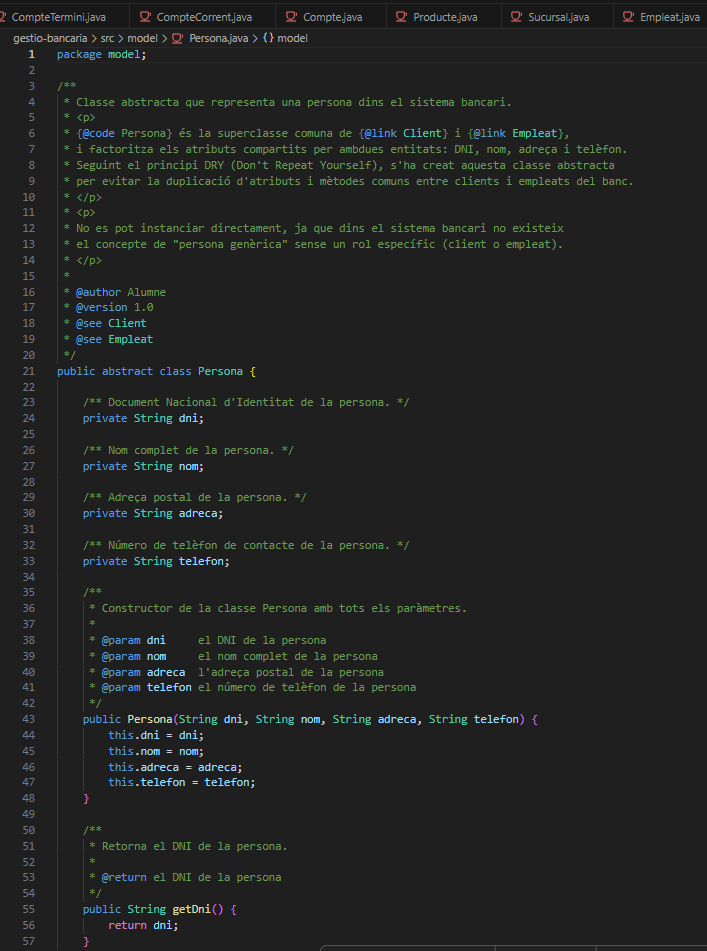
Figura 1: Classe abstracta Persona amb JavaDoc complet (@author, @version, @param, @see)
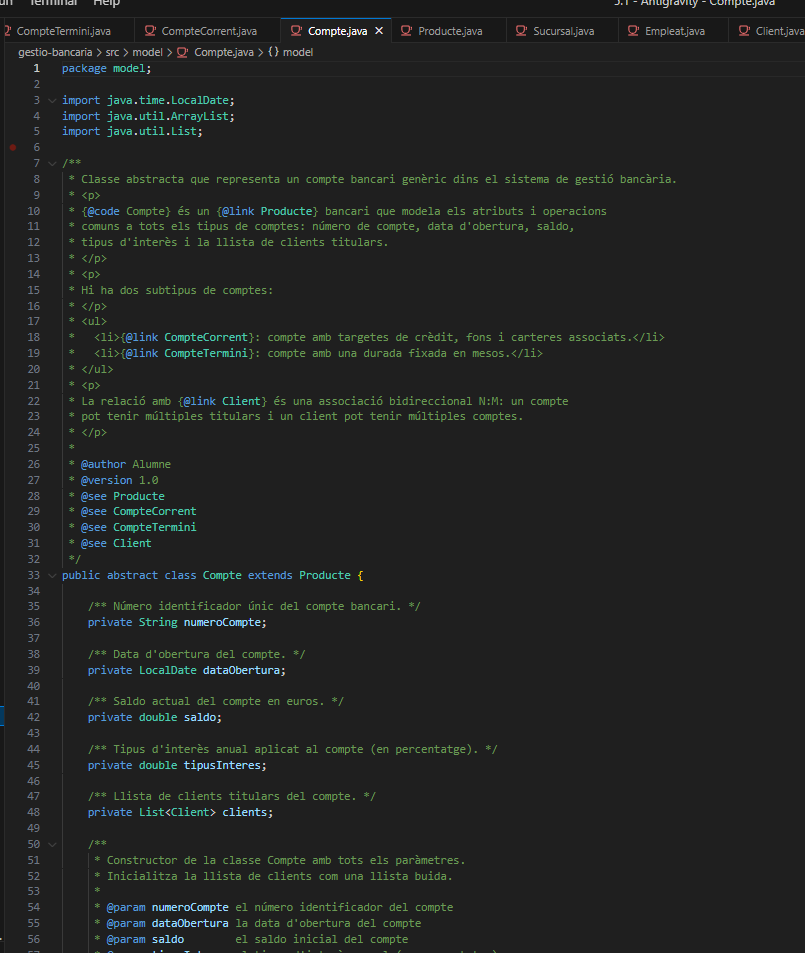
Figura 2: Classe Compte amb JavaDoc, herència de Producte, atributs privats i constructor
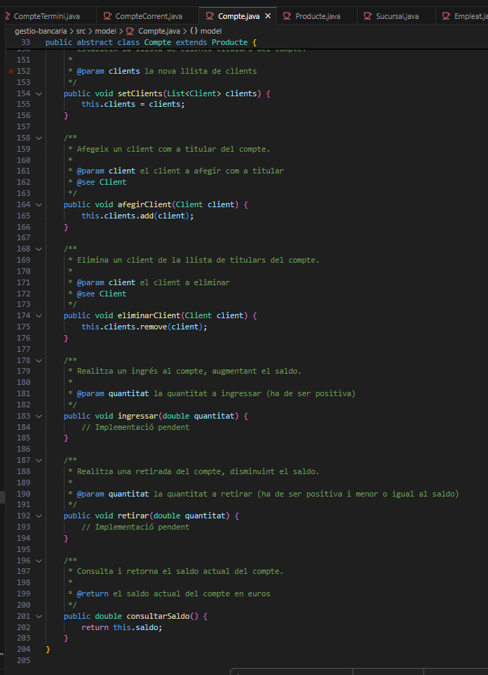
Figura 3: Mètodes afegirClient, eliminarClient, ingressar, retirar i consultarSaldo amb JavaDoc
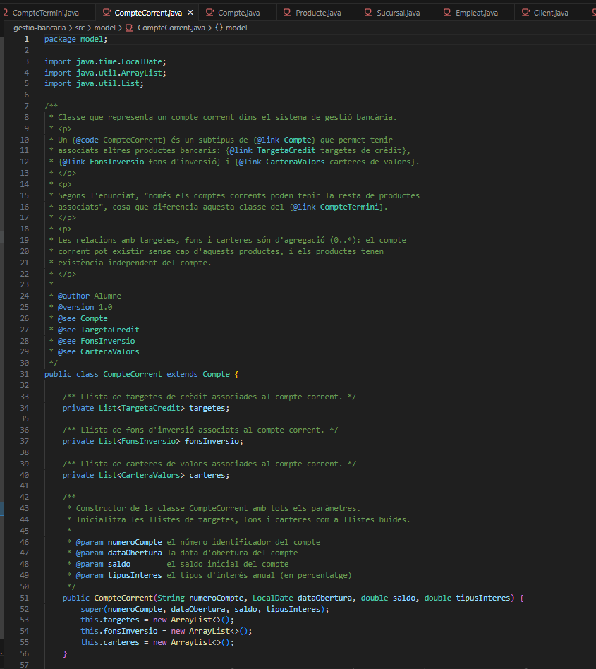
Figura 4: CompteCorrent heretant de Compte amb llistes de targetes, fons i carteres (agregació)
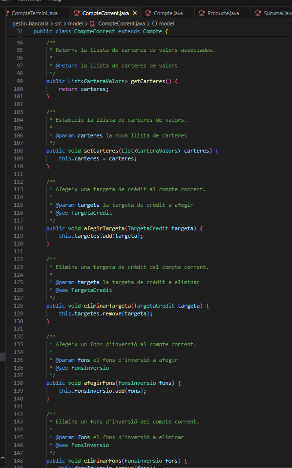
Figura 5: Mètodes afegirTargeta, eliminarTargeta, afegirFons, eliminarFons amb JavaDoc
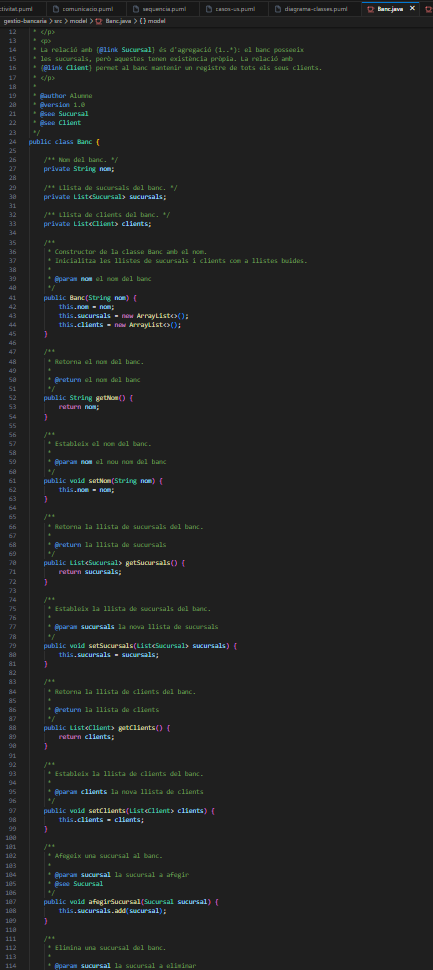
Figura 6: Classe Banc amb llistes de sucursals i clients (agregació), mètodes afegirSucursal i cercarClient
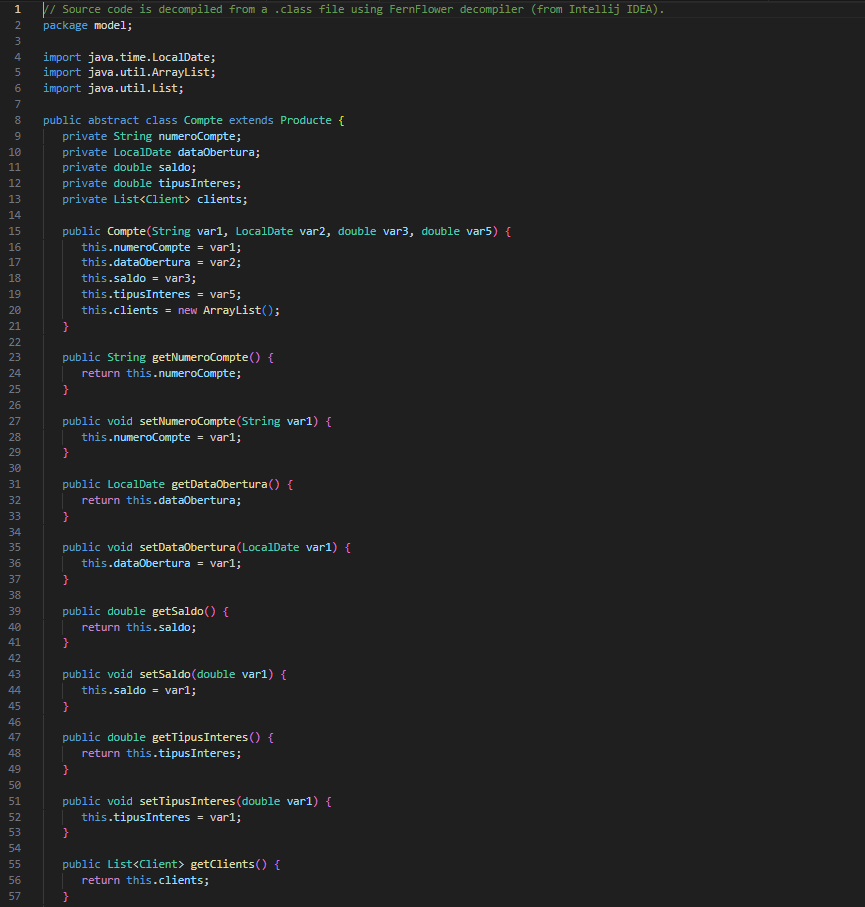
Figura 7: Classe Compte compilada i decompilada per IntelliJ (verificació de compilació correcta)
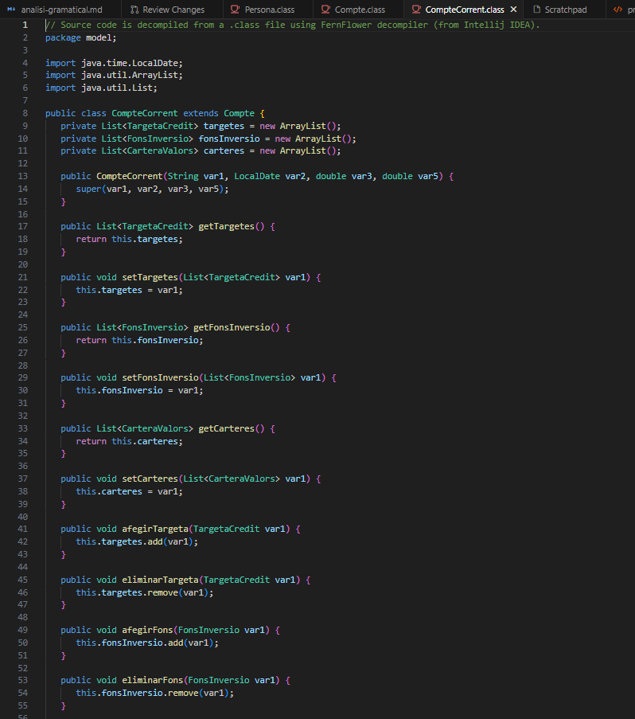
Figura 8: Classe CompteCorrent compilada correctament amb tots els mètodes
Diagrama complet amb totes les classes, atributs, mètodes i relacions. Generat amb PlantUML:
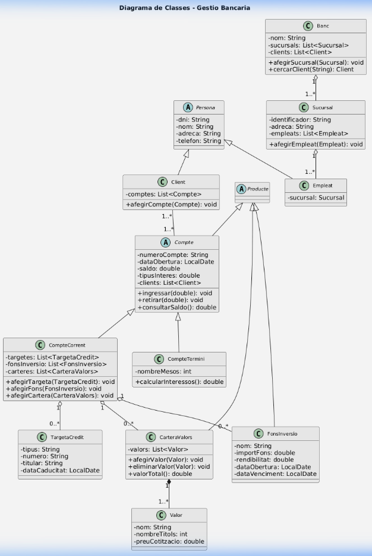
Figura 9: Diagrama de classes UML complet del sistema de gestió bancària
S'han creat 4 diagrames addicionals en format PlantUML (.puml) a la carpeta diagrames/:
| Diagrama | Fitxer | Descripció |
|---|---|---|
| Casos d'ús | casos-us.puml | Actors: Client, Empleat, Administrador amb 17 casos d'ús |
| Seqüència | sequencia.puml | "Obrir compte corrent amb targeta de crèdit" |
| Comunicació | comunicacio.puml | Mateix escenari amb missatges numerats |
| Activitat | activitat.puml | "Realitzar transferència" amb decisió de saldo |
S'ha generat la documentació JavaDoc en format HTML amb la comanda:
javadoc -d documentacio -sourcepath src -subpackages model -encoding UTF-8 -charset UTF-8 -author -version -private
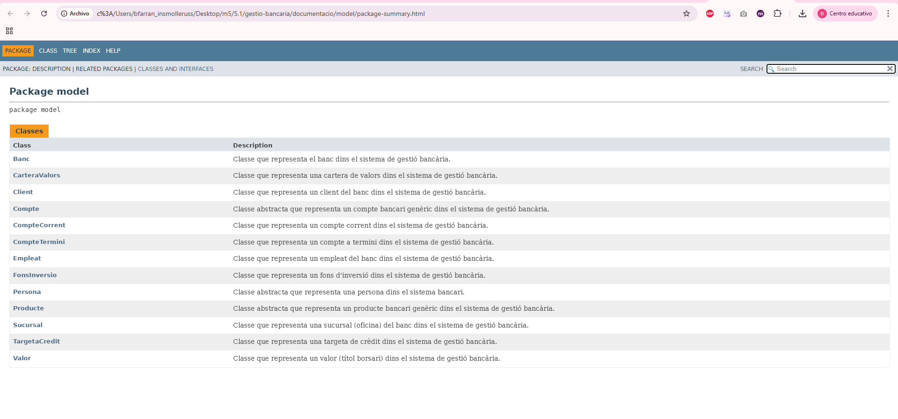
Figura 10: Documentació JavaDoc generada - Llista de les 13 classes del paquet model
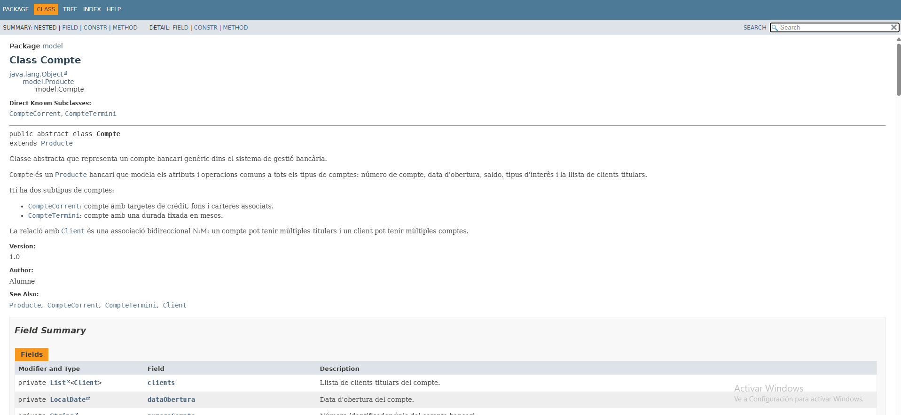
Figura 11: JavaDoc de la classe Compte amb jerarquia, descripció, @author, @version, @see i Field Summary
Els patrons de disseny són solucions reutilitzables a problemes recurrents en el disseny de programari. Popularitzats pel Gang of Four (GoF) al llibre "Design Patterns" (1994), cataloguen 23 patrons en 3 categories: creacionals, estructurals i de comportament.
| Avantatges | Inconvenients |
|---|---|
| Reutilització de solucions provades | Complexitat afegida en projectes petits |
| Millor mantenibilitat | Corba d'aprenentatge |
| Comunicació eficient entre l'equip | Risc de sobreenginyeria |
| Patró | Categoria | Descripció | Exemple |
|---|---|---|---|
| Singleton | Creacional | Una única instància global | Logger, pool de connexions |
| Factory Method | Creacional | Delega creació a subclasses | Calendar.getInstance() |
| Observer | Comportament | Notificació de canvis | Event listeners |
| Strategy | Comportament | Algorismes intercanviables | Ordenació, impostos |
| Decorator | Estructural | Funcionalitat dinàmica | BufferedInputStream |
| MVC | Arquitectònic | Model-Vista-Controlador | Spring MVC |
| Patró | On s'aplicaria | Benefici |
|---|---|---|
| Singleton | Banc | Garantir una única instància |
| Factory Method | Creació de Producte | Centralitzar creació |
| Strategy | Càlcul d'interessos | Intercanviar algorismes |
| Observer | Moviments de Compte | Notificacions automàtiques |
gestio-bancaria/ ├── src/model/ ← 13 classes Java amb JavaDoc ├── diagrames/ ← 5 diagrames PlantUML (.puml) ├── documentacio/ ← JavaDoc HTML generat ├── docs-practica/ ← Documentació de la pràctica ├── README.md ← README professional └── generar-javadoc.sh ← Script d'automatització